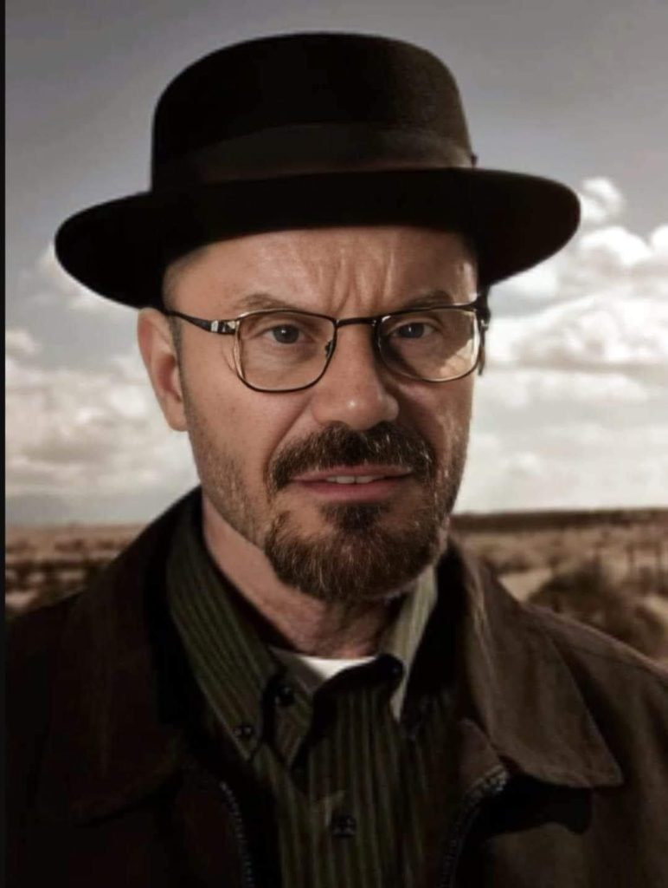
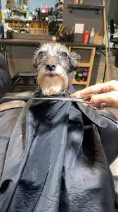

Horário de funcionamento: Aberto 24 horas
Na Flamengo's Barbershop, cada visita é uma experiência única, onde tradição e estilo se encontram. Localizada no coração da cidade, nossa barbearia é o lugar perfeito para quem busca um atendimento personalizado e um ambiente acolhedor.
Aqui, valorizamos o que há de melhor no cuidado masculino, oferecendo cortes clássicos e modernos, além de um serviço de barbear impecável. Nossa equipe de barbeiros é altamente qualificada e apaixonada pelo que faz, garantindo que cada cliente saia com um visual impecável e uma sensação de renovação.
Venha viver a experiência Flamengo's, onde a paixão pelo estilo e o compromisso com a qualidade se unem para criar um espaço único. Estamos prontos para receber você e transformar cada visita em um momento especial. Porque aqui, cada detalhe conta, e cada cliente é tratado como um verdadeiro campeão!
Na Flamengo's Barbershop, nossa equipe é o coração do nosso sucesso. Formada por barbeiros experientes e apaixonados, cada membro traz um toque único e uma habilidade refinada para cada corte e serviço. Comprometidos com a excelência, nossos profissionais estão sempre atualizados com as últimas tendências e técnicas, garantindo que você receba o melhor atendimento possível.
Cariani sempre diz: O fisíco não é a unica coisa que importa, o cabelo tem que estar em dia também.
É o Maicão depensa apresentações.
Seus cortes são como bruxaria.
Rua Alexandre De Moraes, nº41 - Xique-Xique-Bahia - Fone: (17) 4002-8922